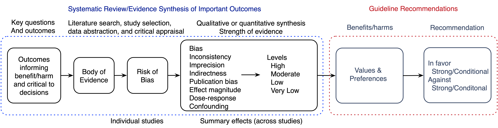

4 Evidence Synthesis
4.1 Introduction
A single study is rarely sufficient to inform a guideline or policy recommendation;(Spiegelhalter, Abrams, and Myles 2004) a synthesis of evidence obtained from multiple studies is required. The evidence synthesis may be qualitative or quantitative ranging from narrative descriptions of study results to pairwise meta-analysis (a single intervention and comparator) or network meta-analysis (multiple interventions or comparators). Regardless of the approach, the purpose of an evidence synthesis is to summarize benefits, harms, and uncertainty (statistical and non-statistical) to inform decisions and recommendations.
4.2 Philosophy
An evidence synthesis strives to make the decision calculus as explicit as possible. It should come as close to addressing the key questions as possible. Sometimes direct evidence and indirect evidence can appropriately be examined, it may be valuable.
And when possible, avoid ad-hoc or highly subjective interpretation of evidence.
Network meta-analyses incorporate direct and indirect evidence and may well be the only option.
Although some question the validity of NMA, we are aware of no evidence to support that contention. Moreover, a pairwise meta-analysis is in effect the simpilist case of an NMA.
Observational data and causal effects. Randomized clinical trials provide the most convincing evidence, but observational studies can offer a decision-maker useful information and sometimes critical.
Broad structured, but not rigid.
Goal is good decisions
Careful sensitivity analyses.
Can be a blunt instrument at times, but having nothing must leave the decision maker to do the calculus in his or her head, which can be fraught.
To that end,
Decision calculus best to be as explicit as possible;
Compatibility intervals; probability of the estimate being true = 0
4.3 Frameworks for Decision-Making
The decision-making required to develop recommendations requires a framework or model — a calculus to summarize the balance of benefits and harms, how each is valued, and their respective uncertainties. The explicitness of this decision calculus varies.(Meltzer et al. 2011) For example, a model can be conceptual in a decision makers mind with little or nothing quantitative. On the other extreme, the model can decision-analytic. Like almost all guideline enterprises, the ASA adopts an approach somewhere in the middle of the two extremes with qualitative and quantitative elements (outlined in Figure 3 using the GRADE approach).
After the key questions are formulated and important outcomes specified, relevant studies are identified, data abstracted, and risk of bias appraised. Based on a quantitative (e.g., meta-analysis) or qualitative synthesis, the strength of evidence for each outcome is rated. Outcomes are then weighted according to patient values and preferences and considered as a whole, in turn determining the strength of a recommendation. What follows are descriptions and examples of how individual elements of the evidence synthesis are implemented.

4.4 Risk of Bias of Individual Studies
Risk of bias assessment for randomized trials uses the Cochrane tool.(sterne2019?) For non-randomized studies of interventions (eg, observational studies of interventions including cohort, case-control, and quasi-randomized designs), ROBINS-I (Risk Of Bias In Non-randomised Studies of Interventions) is used.(sterne2016?) For diagnostic accuracy studies, risk of bias for diagnostic accuracy studies are appraised with the QUADAS 2 tool (Quality Assessment of Diagnostic Accuracy Studies).(whiting2011?) Other tools may be used as relevant. Risk of bias is assessed independently by two reviewers with discrepancies resolved by discussion, or a third reviewer as needed.
4.5 Study Design Classification
Randomized controlled trial (parallel) Cluster randomized Crossover trial Non-randomized trial (non-randomized studies of interventions) Quasi-experimental (before-after, time series) Prospective cohort (observational) Retrospective cohort (observational) Cross-sectional Case-control Fully paired (diagnostic) Case series
4.6 Quantitative Synthesis
As appropriate, based on clinical and methodological heterogeneity, study results are pooled in either pairwise or network meta-analyses. Random effects models are generally used as the goal of pooling is to estimate unconditional effects.{Hedges, 1998 #13} Statistical heterogeneity is evaluated using I2, and for values exceeding 25%, meta-regression is considered.{Thompson, 2002 #14} Small study effects and the potential for publication bias are evaluated using funnel plots, regression-based tests, and adjustment methods.{Schwarzer, 2015 #15} Relative effects are pooled as odds ratios{Doi, 2020 #27} and continuous measures as mean differences or standardized mean differences when studies use differing scales. Analyses are conducted using R in a reproducible manner{Team, 2020 #16;Blischak, 2019 #197} and are made publicly available when the Practice Parameter is completed.
4.7 Network Meta-Analyses
Absent compelling reasons for a Bayesian approach (e.g., to incorporate regularizing/informative prior[s]), network meta-analyses using a frequentist approach are conducted.
4.8 Grading the Strength of Evidence
The strength (certainty) of evidence for important outcomes is appraised using GRADE,{Schunemann, 2019 #18} and ACC/AHA{, 2010 #21} frameworks.
In the GRADE approach (likely to be adopted), a strength of evidence is determined using an algorithm that includes limitations in the body of evidence (bias, inconsistency, imprecision, indirectness, publication bias) together with factors that can increase confidence in effects obtained from observational studies (large or very large effect magnitude, dose-response, extent of plausible residual confounding). According to study limitations, the strength of evidence may be rated down 1 or 2 levels according to study limitations from a starting rating of high for RCTs. Evidence from observational studies begin with a low rating and may be rated down for limitations or rated up because of effect magnitude, dose-response, or the impact of plausible residual confounding. GRADE guidance for rating the certainty of evidence up or down is followed, with some additions. Inconsistency (unexplained heterogeneity) of pooled effects is judged by examining statistical measures (I2 and between-study variance 𝜏2) alongside prediction intervals when there are sufficient studies. Statistical measures can vary by effect (associational) measures (eg, risk ratio and odds ratio) and are examined for differences in choice.
4.9 Strength of Recommendations
The categories of recommendations in the GRADE approach include strong in favor, weak in favor, weak against, and strong against an intervention. Strong recommendations reflect Task Force believing all or almost all clinicians would choose the specific action or approach. Weak recommendations are those where most, but not all, would choose the action or approach.